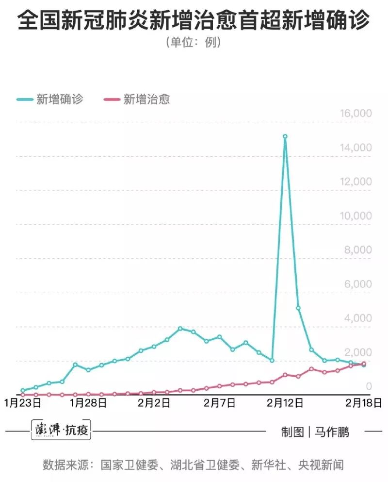
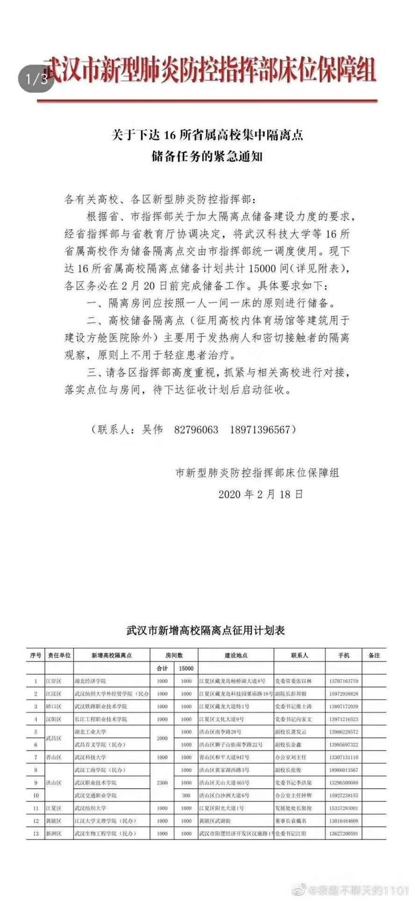
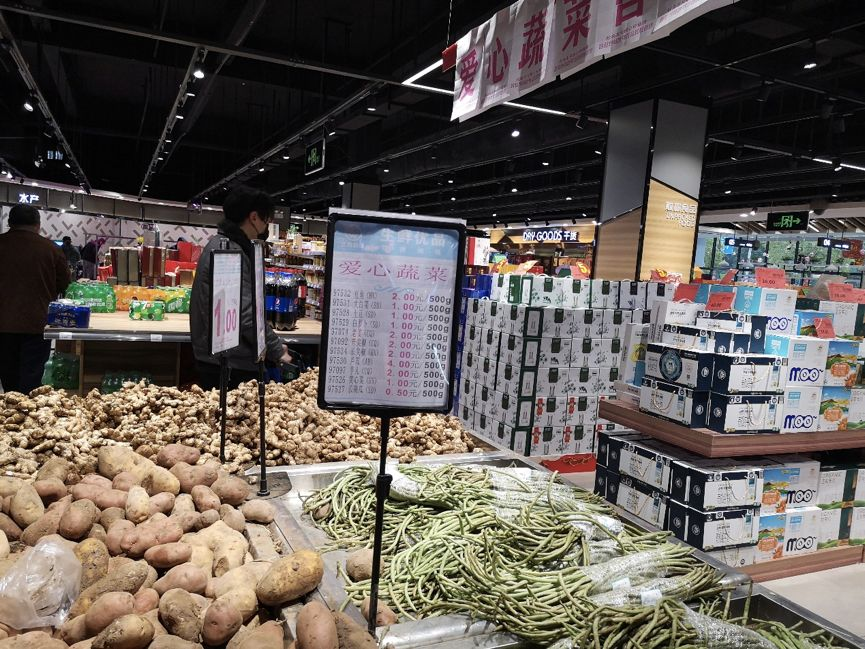
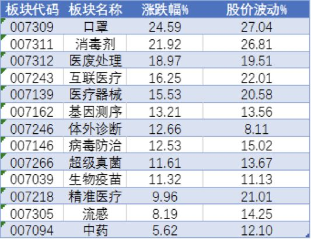

特写|河南信阳本地扩散疫情抬头 确诊加快多项措施并举
原文链接 备份链接 【财新网】（记者 赵宁 方祖望）毗邻湖北随州、孝感，距武汉市区仅两百余公里，河南“南大门”信阳疫情渐趋严峻。截至2月8日24时，信阳确诊病例破两百，达到205例，是河南最严重的地市。信阳已连续9天新增确诊病例超过两位 …
岛语

非常时期，武汉成了全国人民挂念、祈福的城市。封城后，武汉人民的真实生活是什么样？ 武汉在发生哪些变化？
正和岛自1月26日起特别推出“叶青专栏”。叶青是一位定居武汉40年的市民，也是一名学者和官员。在过往多期的专栏文章里，叶青实时记录了很多观察和亲历的事件，并提了很多建设性的建议，深受读者好评。
这将是一份宝贵的史料。感谢他，我们得以更真切地感知到武汉疫情全方面的进展。让我们一起为武汉加油！
*作者 | 叶青 正和岛蓝色岛邻*
排版 | 张珍珍 正和岛湖北岛丁
来源 | 正和岛APP
01
三个好消息
18日，正月二十五。依然是晴空万里。
18日，有三个好消息。
除湖北外，新增确诊病例，15连降！
新增治愈出院病例，连续7天超过千人！
新增治愈出院病例，首次超过新增确诊病例！
18日，全国新增确诊病例1749例，新增重症病例236例，新增死亡病例136例（湖北132例，黑龙江、山东、广东、贵州各1例），新增疑似病例1185例。
截至18日，全国确诊病例57805例（其中重症病例11977例），累计治愈出院病例14376例，累计死亡病例2004例，累计报告确诊病例74185例，现有疑似病例5248例。累计追踪到密切接触者574418人，尚在医学观察的密切接触者135881人。

18日，湖北新增确诊病例1693例（武汉1660例），新增治愈出院病例1266例（武汉676例），新增死亡病例132例（武汉116例，没有想到这么高，17日72例），现有确诊病例50633例（武汉38020例），其中重症病例11246例（武汉9562例）。累计治愈出院病例9128例（武汉4895例），累计死亡病例1921例（武汉1497例，快要1500了），累计确诊病例61682例（武汉44412例）。新增疑似病例596例（武汉234例），现有疑似病例3462例（武汉1649例）。
疫情对经济影响怎么样？
国资委回复：疫情对1月影响可控，对2月影响较大。对于年初制定的生产经营目标和改革任务不会改变。正有序推进复工复产，初步统计，国资委监管的中央企业，所属的2万余户生产型企业开工率超过80%。石油石化、通讯、电网电力、交通运输等行业开工率超过50%，有的已达到100%。
经济发展与健康保障要并重。
02
中央大力支持湖北
18日主持召开国务院常务会议，会议确定，阶段性减免企业养老、失业、工伤保险单位缴费，以减轻疫情对企业特别是中小微企业的影响，使企业恢复生产后有个缓冲期。
湖北之外各省份，从2月到6月可对中小微企业免征上述三项费用，从2月到4月可对大型企业减半征收。
湖北省从2月到6月可对各类参保企业实行免征。
这是给受难中的湖北的一种温暖。因此，湖北原来的政策要修改。
湖北“18条”中的第16条规定，缓缴社会保险费。
对受疫情影响，面临暂时性生产经营困难，确实无力足额缴纳社会保险费的中小微企业，按规定经批准后，可缓缴养老保险、失业保险和工伤保险费，缓缴期一般不超过6个月，最长不超过12个月”。
现在则是2-6月免。
18日，湖北省人民政府正式印发《关于做好疫情防控物资扩产、转产、新建“三个一批”工作实施方案》。
《方案》要求尽快实现以下目标：
全省N95医用口罩产量30万只/天，医用外科口罩产量150万只/天，一次性医用口罩400万只/天，医用防护服产量8万套/天，医用隔离服（手术衣）4万套/天，测温仪3000台/天，心电监护仪6000台/月，负压救护车150台/月。
生产上述产品的重点企业享受哪些支持政策？
一是设备购置补贴。首批共安排10亿元省级专项资金。
二是银行贷款贴息。省级财政统筹按企业实际获得贷款利率的50%进行贴息。
三是政府收储兜底。
03
市委书记发怒：
再有在家病人，拿区长书记是问
18日，湖北省委常委、武汉市委书记王忠林采取不发通知、不打招呼、不听汇报、不用陪同接待、直奔基层、直插现场的“四不两直”方式，暗访江岸、江汉、硚口等地部分社区疫情防控工作，推动落实集中拉网清底大排查，确保“不漏一户、不漏一人”，坚决遏制疫情扩散蔓延。
暗访中，王忠林特别强调两项工作：
一是社区封闭必须要发动、依靠群众，加强群众的防控意识，形成群防群治的力量；
二是各区要尽快提升生活物资保障能力，做好社区物资团购配送，让大家在家也能安心。
这都是救命的事情。

武汉人一直不知道他们的市委书记长得怎么样。什么时候“露脸”？
我一直认为“明察无效，暗访有为”。要了解真实情况莫过于暗访。
18日，结束下午的基层暗访后，王忠林在市新冠肺炎疫情防控指挥部召开视频例会，听取各区重点难点汇报，围绕三天拉网式大排查、小区封闭管理、应收尽收等工作进行再调度、再部署。
提了几点：
——群众发动不起来，打一场人民战争是不可能的。
会议一开始，播放了一段来自媒体的暗访视频。视频显示，武汉部分小区没有按照规定要求管住管严；一些市民防疫意识还比较淡漠……
——现在待在家，是为了今后更健康、愉快的生活。
他的要求是，封控管理一定要严格；发挥好基层党组织的作用；发挥好党员市民的作用；物流配送要完善；下派干部要统一管起来。
——再发现一例居家的确诊和疑似病人，就拿区委书记、区长是问。
19日就是交卷时间，王忠林现场部署：各区要作出承诺，确保没有居家的确诊和疑似病人，“不能不当回事，人命关天，如果再发现一例，就拿区委书记、区长是问。”
看得出来，这是一位有脾气的书记。老书记陈一新差不多。
——收治是为了救命的，不是为了统计数字。
王忠林表示，目前还有很多确诊病人在集中隔离点，得不到很好的救治，“凑凑合合，时间长了，都拖成了重症”。他说，收治是为了救命的，人命关天，不是为了统计数字。
具体任务是，要把居家确诊患者全部收治；要把在集中隔离点的确诊患者分类转移到定点医院和“方舱医院”；对于拒绝收治的病人，要依法进行处理。
这就是目前武汉的关键所在。武汉的生死存亡就在这一招了。
明天，就是王忠林到武汉的一周。
市民都在盯住他。与正规媒体不同，网民可以自由地抒发自己的看法。有人做了一个他的一周回顾。我压缩了一下。
14日，是王忠林赴武汉工作的第一天。
没有欢迎，没有寒暄，空降武汉的王忠林一到任，等着他的就是千钧重担，没有一丝缓冲。
这天，王忠林开了个疫情会。会上，王忠林直奔主题，强调了4个字。
第一，床位。要继续新建方舱医院，尽快做到床等人。
第二，物资。不能保障一线医护人员的物资，会极大削弱战斗力。
除了这个短会，都在基层。
王忠林相信，自己的双眼比任何汇报都更实际，只有亲眼目睹，才能查问题，打硬仗。
15日，王忠林就打出了一连串的雷霆手法。王忠林先与应勇到一线调研。之后火速赶到疫情指挥部，召开视频调度会。这个会每天雷打不动。
王忠林就点了江汉区的名。他用4个字，对江汉区的疫情防控进行了总结：流于形式。他说：我在江汉区的一个超市看到，里面还有很多人在购物，甚至一家人都在。
王忠林痛批的问题，中央指导组也有发现。指导组在暗访中发现，有些超市竟然仍有大量人群，在排队抢菜。这让他们既震惊又气愤：
这种情况继续下去，所有的努力都将白费。
王忠林开始动刀。武汉开始实施严格的社区管控措施，所有小区一律实施24小时封闭制。
王忠林使出太极手，一边恳请领导干部换位思考，把病人当兄弟姐妹，当父母亲人。同时，他又敲打大家，切勿喊空口号，搞形式主义。
16日，王忠林做出一个决定：开展为期3天的集中拉网式大排查，摸清底数。
这是一道针对全市的死命令，没有丝毫商量。
10日，武汉原书记马国强曾说，武汉已经实现了98.6%的排查，引发强烈质疑。
实地暗访之后，王忠林发现，武汉的防控大网上窟窿眼太多了。
会上，王忠林使劲敲着桌子：这件事决不能再等了！
其实前一天，王忠林就发出了灵魂拷问：
为什么我们动用了这么多人力物力还不能做到全部查清，而记者暗访就能发现1000多例病患？
怎么查？不漏一户、不漏一人。
怎么实现？各区党政一把手亲自上阵，各部门单位全部开动。
王忠林又特别加了一句，对落实不力者，将严肃追责问责。
让很多武汉人看到了希望。
第二天，就有4人因防控不力被火线拿下。17日，是3天拉网式排查的第一天。
王忠林再次向全市重申了死命令：要把全市所有人员通通扫一遍，该排除的排除。
这一天，全武汉都行动了起来，全副武装的工作人员，逐个小区，挨家挨户的走访登记。
这是一次真正意义上的排查，非马国强所说的98.6%的排查率，发现感染者，立即就地收治。
王忠林指示，不管重症、轻症，只要确诊都给看：不能眼巴巴看着这些人失去生命。
之前武汉落下的短板，王忠林正在全力补救（武汉已经死了1500多人，等不得了）。
18日，他再次以“四不两直”方式进行暗访。其中一站，去了百步亭社区。
网友说，作为老公安，暗访对王忠林来说家常便饭，再有人想糊弄，就等着丢官吧。
结束暗访后，王忠林直奔会场。就是在这次会上，他放出狠话：
如果再发现一例居家确诊病人，问责区委书记区长。
有好事网友直接捅刀，向武汉人发出呼吁：
请积极做王忠林书记的眼线，若有发现排查遗漏，立即报告。
实际上，经过前两天的排查，效果已经出现。这两天翻微博，网友说的最多的一句话就是：我们小区终于排查了。
前天晚上，财新副主编高昱特地赶到武汉五院实地查看，结果让他非常吃惊。竟然是空荡荡的。
而十几天前，这家医院的门诊、急诊、急救都拥挤不堪，人满为患。
接诊处的护士说，她从晚上6点上班，到晚11点半，5个半小时内，只接待了8名病人。高昱觉得有点不可思议，又绕着医院转了半个多小时。
结果，这段时间里，3个住院部，没有一辆急救车或殡仪车驶入。
安静的院区，让高昱长舒了一口气。（这就是旁观者清）
王忠林的三板斧，真正砍到了要害。
在济南时，王忠林说的最多的话就是：
不要想着说不，多想想怎么说行。
王忠林，曾一次问责155名干部。（这一点武汉的干部要记住）
18日，有济南网友发了一条微博：王忠林调走的第六天，想他……
想了也是白想。不给。
接到济南记者的采访，我说，像陈一新当年“反新衙门作风”一样，你们“给”我们的书记也在改变着武汉的慵懒。
16日以来，作为全市战“疫”指挥中枢，武汉市新冠肺炎疫情防控指挥部内部设置有了新调整，新设立四个组。
——床位保障组，想方设法补齐床位短板。
武汉市新冠肺炎疫情防控指挥部已经下达了紧急通知，在20日前征用23家定点医院共计14000张病床收治新冠肺炎重症病例。
截至17日，武汉市定点医院增加到45家，共有床位19161张，实际使用床位18086张。
截至目前，武汉定点医院、“方舱医院”和隔离点总床位超过7.2万张。方舱医院使用的床位超过2万。
同时，启动16所省属高校的隔离点建设工作。

——疾病控制组，力求“早发现早隔离早收治”。
14日，武汉市核酸检测人数就超过了1.2万人，共有40家机构能开展核酸检测。16日武汉新增疑似病例338例，疑似病例共计1971例；17日，武汉新增疑似病例为340例，疑似病例共计1799例。
——援汉医疗队接待协调组，为最美逆行者们做好服务。
在20日前，各区都要有1000间房间的规模，要为来汉医疗队提供优质餐饮服务，每餐提供荤素搭配的盒饭和水果，并且根据少数民族习俗和地域风俗提供适当餐饮服务，最大限度满足个性化需求；配备必要的取暖器、电热毯、暖手宝等物资，紧急采购一批棉衣、棉被、羽绒服，及时发放到医疗队员手中，确保御寒保暖，及时解决队员理发需求。
完全应该。
口罩、酒精、84消毒液、手套……19日起，这些“健康关怀包”将陆续送到全市近两万个一线医务工作者的家属手中。
这里有一个商机。这种消毒包，也需要家庭型、个人型。以后出差，除了洗漱包还会有消毒包。我相信这一点。
——党建考核组，用激励和问责增强一线战斗力。
武汉市已启动火线提拔干部工作，截至18日，已有14位党员干部获火线提拔。就是提拔的级别低了。天津、江苏提拔局级干部。也有一些党员干部不能履职尽责被通报。
在高强度的管控中，人民警察功不可没。
全市公安机关严格落实医疗机构安保“六个一”措施，目前已在全市130个定点医院、发热门诊、方舱医院、临时医院等医疗场所逐一配齐安保力量，驻点维护医院治安秩序，服务医护人员和病患者。
彻底解决原来社会管控松松垮垮的局面，战时管理就应该有一个战时管理的样子。这方面，社区干部特别需要警察的帮助。否则，水龙头怎么会关得紧呢？
平时，武汉本地的网购总是做得不如盒马生鲜等外来品牌。这次新冠肺炎时期，可能会打一个翻身仗。
18日，中百仓储、武商超市、中百超市等市内各大商超，均发布详细版社区“团购指南”，公布各类团购套餐明细、价格，以及覆盖全市各个社区、各个门店团购负责人联系方式，方便社区与商家进行团购对接。
比如，中百仓储有小区团购、线上购物两种方式。
小区团购，是根据就近门店推出的不同商品组合套餐或个性化需求产品，小区代办人到店自提或配送至小区统一提货点后由代办人分发。
线上购物，是以该超市网上购物平台中百多点APP、美团外卖等，实行在线订购。在线订单也可以进行线上支付，配送至小区配送自提点，统一小区分发。
武商超市推出了“小区/社区生活套餐”，小区/社区代购员（采购组）负责统计本小区所有住户的购买需求，提供给超市后，可按社区居民要求供货。同时，超市公布了超市门店联系人及社区团购负责人电话，有需求的居民可以直接联系。
武商网线上平台发布不同门店的套餐购买链接，根据门店二维码进入之后，在线购买该店的各个套餐。
18日下午6时，一路飞驰了800余公里的10辆满载300吨土豆、冬瓜、圆葱等蔬菜的大货车，抵达武汉长航医院。
现在是接受山东等爱心捐赠方与武汉市民的意见，部分蔬菜直达医院，部分蔬菜进超市，低价出售。资金进红十字会账户。原来爱心菜在2元，现在有的已经降到1元或者5毛。

月16日晚10点，金银潭医院内，涂盛锦和曹珊在车上睡下，这辆陪伴他们八年的大众MPV就是夫妻俩住了第23天的家。

今年44岁的涂盛锦是金银潭医院南六楼重症隔离病区副主任医师，40岁的曹珊原是医院儿科病房护士，疫情爆发后，于1月7日调入南二楼隔离病区工作。
两人的家在武汉南湖边，隔着长江，距离医院有30公里，单程驾车需要40分钟。
大年初一起，夫妻俩在家中拿了四床被子放在车上，干脆都住在车里。妻子睡后排，他睡副驾，11岁的儿子从此就完全交给了家中的外公外婆。
这给我们提出一个问题，疫情过后，我们买什么样的车，买什么样的房子。
MPV，宽大，遇到特殊情况或者外出，可以当床，相当于房车。此次疫情说明，大量的病人出现在高楼，别墅区较少。买高楼的房子尽量是有露台的顶楼，或者是有平台的底层。这都是以后大家要考虑的事情了。
04
心痛的故事
18日10时54分，武昌医院院长刘智明感染新冠肺炎抢救无效离世，享年51岁。他是自疫情暴发以来武汉首位因感染去世的在职院长。截至当日，在抗击疫情工作中，武汉至少已有8位医护人员因公殉职。
毕业于武汉大学、“爱草爱花爱生活”的刘智明院长，没能再见到盛开的樱花。
最近，浙江电视台钱江视频在抖音发布一则视频，视频中，浙江援汉医疗队一位护士透露：一位重症患者写下7字遗书，并拒绝使用丙球蛋白，想留给更需要的人使用，引发全国网友关注。
这份遗书是12日上午，新冠肺炎重症患者肖贤友在武汉市第四医院（古田院区）写下的。当日下午，肖贤友被转至金银潭医院，第二天，由于病情恶化，肖贤友不幸离世。
2月1日下午，丈夫在微信上发来几个字：“支付宝里有钱”，她回复：“我不要，你要好好的。”随后，丈夫又发来一句话：“把我的尸体给国家。”林林回复：“你要丢下我，我不答应。”

18日，武汉市委、市政府官方头条号“武汉发布”就武昌医院护士柳帆去世及其家属情况，回复网友提问：柳帆，女，59岁，副主任护师，生前在武汉市武昌医院举办的梨园街社区卫生服务中心注射室从事护理工作。
7日被确诊为新型冠状病毒肺炎，医院尽全力进行救治，但由于基础性疾病较多，病情呈进行性加重，14日18时30分经抢救无效逝世。在她去世前，其父母和弟弟也先后因感染新冠肺炎去世，丈夫和女儿目前正在隔离观察中，尚未发现感染新冠肺炎。
又是一个“一家四口”。愿她的丈夫和女儿平平安安。
05
股市还比较给力
1月23日武汉封城开始，全国进入战“疫”状态。而从疫情爆发起，医药板块可谓是备受瞩目，中药、流感概念、体外诊断、基因测序、互联医疗、医废处理、医疗器械、口罩、消毒剂、生物疫苗等概念轮番上涨。
口罩、医废处理、消毒剂概念涨幅居前，中药、流感概念后劲不足。
医药相关概念涨跌幅和股价波动情况（2020.1.2-2020.2.18）

18日，远在浙江的医疗专家在线远程控制超声机器人，“隔空”700余公里，为一位身处黄陂方舱医院的病人做超声检查。

2020年开年，一场抗疫，却意外地成为了5G大显身手的战场。
对普通人来说“看不见、摸不着”的5G，在战场上一经落地，就现出了惊人威力。
威力之一：5G远程医疗场景。
5G远程医疗手段让医护人员在与病人不接触的情况下也能实现初步筛查，安排高度疑似病患有序就医或者专车上门隔离运送。
8日，北京和武汉两地进行了5G远程病例会诊的实战，将千里以外的“智囊”汇聚到一起，集合了全国的精兵强将，对两名重症患者进行会诊。
威力之二：5G无人医疗场景。
简单的隔离医护工作，比如端水送饭、药物配给、体温测量等都可以采用5G医护机器人，而为病人床头配置5G医护智能音箱、5G问诊检测设备，也能降低医护人员工作强度、减少感染机率。
威力之三：5G健康监测场景。
联通推出5G+热成像人体测温信息化平台，平台凭借5G传输技术，可将视频及相应数据实时传送到大屏或云平台进行数据记录和监测。
防疫是一个系统工程，这是杭州小江村的基层工作人员绘制的，厉害吧？

17日，广西富川党建网发布的《干部任职前公示》中，一位无大学学历的干部引起大家的注意。
莫新艳，女，1971年11月生，在职大专学历，副主任护师，现任富川瑶族自治县疾病预防控制中心艾防科主任，县疾病预防控制中心新型冠状病毒感染肺炎疫情防控工作领导小组成员、流行病学调查处置第三小组组长，在新冠肺炎疫情防控工作中表现突出，拟任八级管理岗位领导职务（无大学学历，因在疫情防控一线表现特别优秀破格提拔，已报上级组织部门同意）。
这个时候能够舍生忘死为人民服务最重要，有没有学历再说。
在此我提一个建议，对这次抗疫中表现突出的干部，事后到党校集中学习，重点提拔使用。
18日晚，湖北鄂州市委组织部微信公众号发布：提名免去王时文同志市卫健委主任职务。
最近，黄冈市、鄂州市、湖北省卫健委主任都被免职。我不由得长叹一声：我又提了得罪人的建议。中国有250万辆公车，公车改革建议得罪领导与司机，最终得罪500万人。但是，我是另类的党外人士，得罪人的建议都让我一个人说吧！其实，得罪人的建议一旦被采纳，老百姓是最高兴的。
在得罪官员与老百姓高兴两者之间，我选择后者。
无愧我心！
我是把公车改革的论文写在道路上。
当然，也不是没有专著。
2017年，我出版了32万字的全世界唯一的一本公车改革的书。网上还有卖的。还有《代表谈财政》《代表谈审计》也不错。

06
小结
三个数字是好消息。
市委书记够厉害。
武汉人看到新的希望。
对干部严，就是对群众的爱。
这种“呵斥”越多越好。

活着，成为当下中国民营企业的最高纲领！
如何打赢2020“生死之战”？她亲历阿里抗击非典，并带领创业酵母团队用七天时间快速完成业务转型和架构调整。
CEO如何深度思考与认知迭代，听张丽俊老师倾囊相授（识别图中二维码，即可收听）
**报名咨询：正和岛张珍珍**
18511280817
原文链接 备份链接 【财新网】（记者 赵宁 方祖望）毗邻湖北随州、孝感，距武汉市区仅两百余公里，河南“南大门”信阳疫情渐趋严峻。截至2月8日24时，信阳确诊病例破两百，达到205例，是河南最严重的地市。信阳已连续9天新增确诊病例超过两位 …
原文链接 备份链接 *************▲*************2月18日，青山区工人村街道青和居社区第三网格网格员在挨家排查。 （新华社/图） 全文共8426字，阅读大约需要16分钟。 新建或改造医院的速度，远比不上确诊病 …
原文链接 备份链接 全国武汉以外地区全面向好，期待武汉落实五个“百分之百”终获成功！ 文 |《财经》数据研究员 徐进 图 |《财经》视觉中心 编辑 | 谢丽容 一、 累计确诊病例 截至2月18日24:00，全国累计报告确诊新冠肺炎病 …
原文链接 备份链接 2 月 17 日，《中华流行病学杂志》杂志上，中国疾病预防控制中心新型冠状病毒肺炎应急响应机制流行病学组最新发表新冠肺炎研究。 在对截至 2020 年 2 月 11 日中国内地报告的 超过 7 万病例的流行病学特征进行 …
原文链接 备份链接 【财新网】（记者 赵宁）北京疫情增速放缓，但防控力度仍未放松。2月16日北京仅新增1例新冠肺炎确诊病例，这是北京连续4天新增确诊病例保持个位数。北京累计疑似病例也从2月11日开始连续6日下降。尽管整个疫情呈现放缓迹 …